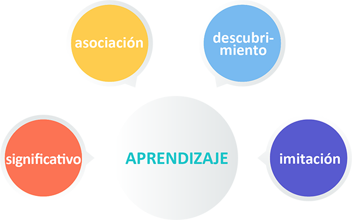
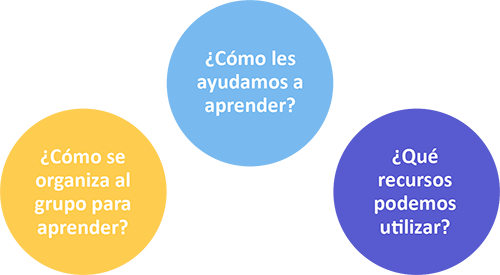

UNIDAD 2 : EL APRENDIZAJE DE ADULTOS EN EL ENTORNO VIRTUAL
2.1 El aprendizaje de adultos
Es imprescindible tener en cuenta que en los cursos que tutoricemos nuestros alumnos son personas adultas.
Por tanto, hemos de considerar las características de aprendizaje de los adultos, es decir, como estudiantes autónomos, con experiencias previas y orientados a objetivos contretos:
Las personas adultas tenemos todo un bagaje de experiencias y conocimientos que pueden llegar a ser una valiosa fuente de aprendizaje que ningún formador ni tutor puede obviar o rechazar. Esta experiencia acumulada la debemos aprovechar para enriquecer los aprendizajes que se den en el grupo y en el aula virtual.
Nuestra motivación para aprender se centra sobre todo en aquellos temas y actividades que nos permitan desarrollar y mejorar los roles que desempañamos. Por tanto, solemos tener unas expectativas y necesidades muy concretas en nuestra propia formación.
Debido a que nuestros objetivos formativos están centrados fundamentalmente en aspectos concretos de nuestro desarrollo profesional o laboral, fundamentamos la utilidad del conocimiento en la aplicación inmediata de nuestros aprendizajes, y por ello, nos orientamos más a la resolución de problemas que al desarrollo teórico de temas.
2.2 La práctica formativa en el ambiente virtual
Nuestra experiencia en formación virtual nos dice que aprendemos generalmente de lo más cercano a lo más lejano.
El primer objetivo como tutor virtual será el de encontrar “cercanías” y vínculos con los participantes para que puedan entrar en materia. Acortar distancias con los participantes, lograr establecer nexos y puntos de encuentro y, así, establecer un punto de partida.
Como tutores también partimos de lo que conocemos y por esa razón es recomendable conocer el punto de partida de los participantes del curso que estamos tutorizando: qué hacen, de que organización vienen, qué esperan del curso, etc.
Todas estas preguntas y las que nos vayan surgiendo deberían plantearse abiertamente desde el comienzo.
Esta manera de mostrar interés hacia nuestros participantes más allá del propio contexto de un curso de formación se intensifica mucho más en el ambiente virtual gracias a las herramientas que disponemos.
Aula virtual del curso Biosimilares.
2.3 Estilos de aprendizaje
Mucho se ha escrito y se sigue escribiendo sobre la forma en que las personas preferimos aprender o sobre las maneras en las que aprendemos mejor o más. Algunas teorías apuntan a que el estilo de aprendizaje depende de la forma en que nos gusta percibir la información, en cambio otras lo fundamentan en los tipos de inteligencia: cognitiva, emocional, etc.
A modo ilustrativo, podemos decir que aprendemos por asociación de ideas y conceptos, o porque descubrimos información que nos interesa, o porque imitamos destrezas y habilidades, o porque lo que aprendemos lo hacemos si lo interiorizamos y es significativo para nosotros.
En todo caso y siguiendo lo que apuntan muchos expertos, los modelos de aprendizaje aplicados a la formación virtual que desarrollamos los podemos conceptualizar en dos:
Aprendizaje autónomo
El alumno es el gestor de su propio aprendizaje.
Es un proceso en el que cada persona asume la iniciativa de su propio aprendizaje, con o sin ayuda de compañeros.
Aprendizaje colaborativo
Cada miembro del grupo es responsable tanto de su aprendizaje como del resto del grupo.
Las estrategias y actividades se orientan a incentivar la colaboración entre alumnos para conocer, compartir, y ampliar la información que cada uno tiene sobre un tema. Esto se logra compartiendo datos mediante espacios de discusión reales o virtuales.
Para saber más
Modelos |
Autoformativo |
Autoformativo con tutorización |
Colaborativo participativo |
|---|---|---|---|
Aprendizaje |
Basado en los materiales. |
Basado en materiales e interacción con el tutor. |
Basado en aprendizaje colaborativo y comunidades virtuales. |
Número de alumnos |
Muchos y heterogéneos. |
Hasta 100 por grupo y tutor. |
30-50 por grupo y tutor. |
Tutoría |
Reactiva: el tutor responde a peticiones de los alumnos. Bajo esfuerzo del tutor. |
Proactiva: el tutor resuelve dudas y genera debates y discusiones para construir conocimiento. Esfuerzo medio del tutor. |
Alto desempeño del tutor porque los alumnos construyen el aprendizaje que desean de forma colaborativa entre todos. Alto esfuerzo del tutor. |
Interacción con otros alumnos |
No necesaria. Poca o nula. |
A través del tutor y de los foros. |
Alta, es el eje del conocimiento. |
Estructuración de contenidos y materiales |
Diseñados y desarrollados previamente. |
Los contenidos los complementa el tutor con sus aportaciones y actividades. |
No tiene por qué haber. El conocimiento se genera a partir de contenidos o no a través del grupo y aula virtual. |
Evaluaciones |
Sistema autoevaluativo |
Sistema autoevaluativo y seguimiento del tutor. |
Permite todo tipo de evaluaciones. |
Plataforma, aula virtual |
Interfaz simple y amigable |
Necesidad de herramientas de comunicación |
Requiere herramientas colaborativas y web 2.0. |
Tasa de deserción |
Alta |
Moderada |
Baja |
Debemos saber que en función del tipo de curso en el que participemos como tutores o los objetivos de aprendizaje que se persigan, utilizaremos un modelo de aprendizaje determinado.
Hemos considerado de interés repasar el modelo de Honey y Mumford sobre los estilos de aprendizaje. Para Honey y Mumford (1992) los estilos de aprendizaje son cuatro:
Activista
Las personas que tienen predominancia en estilo activo se implican plenamente y sin prejuicios en nuevas experiencias. Se crecen ante los desafíos y se aburren con los largos plazos. Son personas muy de grupo que se involucran en los asuntos de los demás y centran a su alrededor todas las actividades.
Reflexivo
Los reflexivos aprenden también con las nuevas experiencias pero no les gusta estar directamente implicados en ellas. Reúnen datos, analizándolos con detenimiento antes de llegar a alguna conclusión. Disfrutan observando la actuación de los demás, escuchándoles pero no intervienen hasta que se han adueñado de la situación.
Teórico
Los teóricos aprenden mejor cuando las cosas que se les enseñan forman parte de un sistema, modelo, teoría o concepto. Les gusta analizar y sintetizar. Para ellos si algo es lógico, es bueno.
Pragmático
El punto fuerte de los pragmáticos es la aplicación práctica de las ideas. Descubren el aspecto positivo de las nuevas ideas y aprovechan la primera oportunidad para experimentarlas. Tienden a ser impacientes cuando hay personas que teorizan.
Realicemos un ejercicio práctico relacionado con los estilos de aprendizaje aplicados a la formación online.
En este modelo se clasifica el aprendizaje en tres estilos, dependiendo del sentido o sentidos que más utilizamos para aprender: visual, auditivo y kinestésico.
Con la tabla que aparece a continuación, realizaremos un ejercicio de autoevaluación donde podremos determinar nuestro estilo de aprendizaje, de acuerdo con la forma en que preferimos adquirir la información.
Para cada pregunta hay que seleccionar la columna que más se aproxima a nuestra manera de hacer las cosas. Una vez completado, hay que contar las respuestas de cada columna para identificar nuestro principal estilo de aprendizaje.

Fuente: Adaptado del libro El Profe Virtual: ¿Estamos listos para la educación virtual? Nuestros estudiantes sí lo están. (Spanish Edition) [Paperback] Guillermo Ramírez
Puedes utilizar este cuestionario como un recurso didáctico de tu aula virtual que te permitirá conocer el estilo de aprendizaje de tus alumnos y adaptar tus tutorías a ellos.
Ahora que ya sabemos nuestro estilo de aprendizaje, sepamos la descripción general de cada estilo.
Los aprendices visuales
Se relacionan con más efectividad con la información escrita, notas, diagramas y dibujos.
Están incómodos en una presentación si no pueden tomar notas detalladas.
Consideran que una información no existe si no la han visto escrita en alguna parte.
Toman notas adicionales aunque les entreguen los materiales del curso.
Tienden a ser más efectivos en las comunicaciones escritas, en la manipulación de símbolos, etc.
Los aprendices auditivos
Se relacionan con más facilidad con la palabra hablada.
Tienden a escuchar una conferencia y luego toman apuntes o revisan el material entregado.
Dan más importancia a lo que les dicen que a lo que ven escrito.
A menudo repiten en voz alta los textos para entederlos o recordarlos.
Pueden ser buenos oradores o conferencistas.
Los aprendices kinestésicos
Aprenden más efectivamente a través de tocar, del movimiento y del espacio.
Prefieren imitar y practicar.
Pueden parecer lentos debido a que la información no se les presenta en forma adecuada a sus métodos de aprendizaje.
2.4 Guía de habilidades básicas para los alumnos online
Considerando lo que hemos aprendido sobre el aprendizaje de adultos, una de las principales tareas como tutores consiste en ayudarlos a ser autosuficientes y contribuir a la construcción colectiva de conocimientos.
Para ello, el trabajo en grupo y el aprendizaje colaborativo a través de las herramientas del aula virtual es la mejor estrategia.
Como tutores hemos de tener en cuenta que nuestros alumnos tendrán diferentes intereses, motivaciones, necesidades y habilidades de los participantes adultos, y que aunque eligiendo un curso virtual buscamos flexibilidad y autonomía, necesitaremos la colaboración de nuestros compañeros para resolver algún tipo de problema: de contenidos, tecnológicos, etc.
Cuando hablamos de flexibilidad nos referimos a:
Tiempo
Espacio
Ritmo
Entorno
Acceso
Curriculum
Fuente: adaptado de Paulsen (1992).
Guía de las habilidades básicas para los alumnos
Tecnología |
Los participantes necesitan tener acceso a Internet a través de un dispositivo, principalmente a través del ordenador. Este aspecto es muy importante: La facilidad de acceso nos ayudará como tutores online a mantener el contacto con los participantes y su desarrollo (ritmo, calendario, comunicaciones, etc.). |
Es posible que algún curso online necesiten descargarse alguna aplicación o software. Tendremos que gestionar bien este proceso para que los participantes realicen la descarga correctamente. |
|
La mayor parte de la comunicación online se producirá a través de e-mail. Por tanto, es necesario que sepan cómo usar el correo electrónico y usarlo antes de empezar el curso. |
|
La mayoría de las tareas de la clase online se envían a través del espacio dedicado a las actividades. Saber cómo adjuntar un archivo es una condición indispensable. Deberemos asegurarnos que los participantes lo saben hacer. |
|
Otros aspectos concretos como el bloqueo de las ventanas emergente o las características de los navegadores que se utilicen pueden explicarse en el taller virtual previo del curso que estemos tutorizando y crear un documento de preguntas frecuentes (FAQS) que siempre este disponible en el aula virtual. Además, normalmente hay un coordinador técnico que ayuda a los alumnos con las dudas técnicas. |
|
Aprendizaje |
La lectura es una habilidad muy importante. A los participantes les pediremos que lean los materiales online y que participen en debates a través de foros de discusión y tendremos que asegurarnos que los utilizan correctamente. |
La lectura de las instrucciones y orientaciones también es importante en una clase online. Nos tenemos que asegurar que los alumnos leen todas las instrucciones e indicaciones con detenimiento para que no se entiendan mal o les generen dudas que podrían evitarse. |
|
Los alumnos deberán tener autodisciplina y habilidades de gestión del tiempo porque van a trabajar solos. Mediante la guía de aprendizaje y la planificación de las tareas les podemos ayudar. |
|
Hay que animarles a que lancen sus preguntas o dudas en el foro. Todos aprendemos de las dudas de los demas participantes. |
|
La escritura es otra de las habilidades clave, porque la mayor parte de la comunicación online se realiza escribiendo. Los participantes deben ser capaces de expresarse bien por escrito. |
|
Expectativas |
Los participantes deben saber que una clase online se necesita el mismo o incluso más tiempo que una clase presencial. Debemos estar preparados para invertir tiempo delante del ordenador. |
Como tutores hemos de responder los mensajes de los participantes dentro de las 48 horas siguientes. Por este mismo motivo, debemos comentar a los participantes que no esperen hasta el último momento para trabajar en sus actividades. Si lo hacen, es posible que no puedan obtener la ayuda que necesitan para cumplir los plazos. |
|
El debate en el aula virtual es un elemento muy importante y por eso los alumnos deberán estar preparados para participar en las discusiones a través del tablero de discusión o foro. |
|
Tendremos que explicar a los participantes que puede que tengan que realizar alguna actividad colectiva que implique trabajar con otros miembros del grupo. Tendremos que facilitarles toda la información necesaria: cómo se deberán comunicar, en qué plazos, etc. |
|
Las estrategias de aprendizaje son los métodos o técnicas que se utilizan para aprender. Las estrategias de aprendizaje que funcionan en una clase cara a cara pueden no funcionar en una clase online. Debemos estar preparados para cambiar nuestras estrategias de aprendizaje. |
¿Y cómo se articula todo esto?
La articulación de estos elementos se vehicula a través de las actividades que diseñemos.